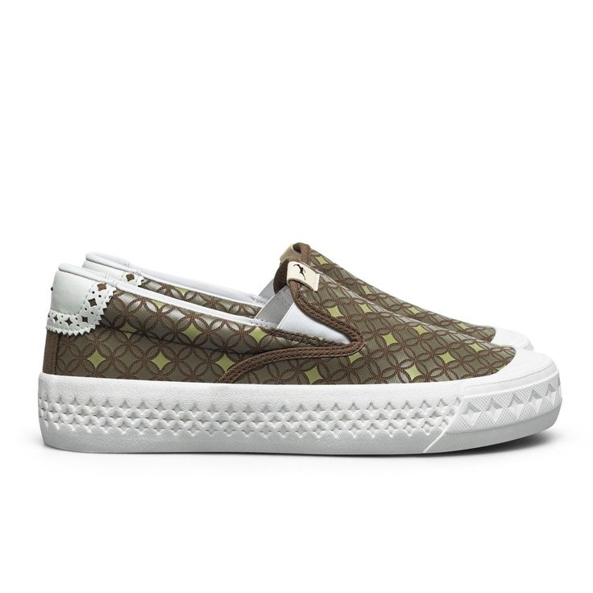

Rekomendasi Sepatu Slip-On
Sepatu slip-on terkenal karena desainnya yang simpel tanpa tali, mudah dipakai, dan sangat nyaman. Jenis sepatu ini cocok untuk aktivitas santai, hangout, hingga kegiatan sehari-hari. Beberapa merek populer seperti Vans Slip-On, Puma, dan Wakai sering menjadi pilihan.
Tips merawat sepatu slip-on:
- Bersihkan bagian dalam secara rutin agar tidak mudah bau.
- Gunakan sikat lembut untuk membersihkan noda di permukaan sepatu.
- Jangan menjemur sepatu langsung di bawah matahari agar warna tidak cepat pudar.